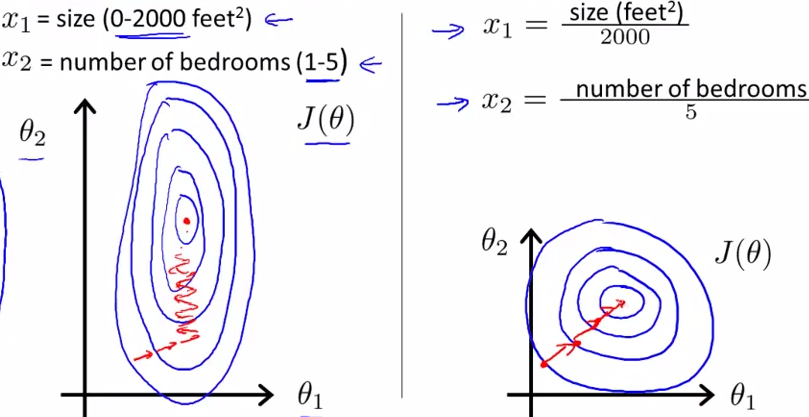
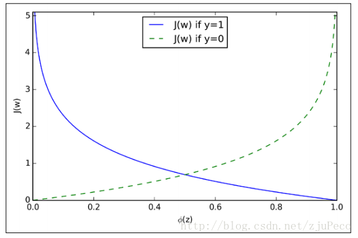
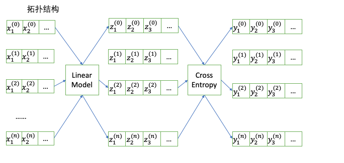

<!DOCTYPE html>
<html lang="zh-CN">
<head>
  <meta charset="UTF-8">
<meta name="viewport" content="width=device-width, initial-scale=1, maximum-scale=2">
<meta name="theme-color" content="#222">
<meta name="generator" content="Hexo 6.2.0">
  <link rel="apple-touch-icon" sizes="180x180" href="/images/apple-touch-icon-next.png">
  <link rel="icon" type="image/png" sizes="32x32" href="/images/favicon-32x32-next.png">
  <link rel="icon" type="image/png" sizes="16x16" href="/images/favicon-16x16-next.png">
  <link rel="mask-icon" href="/images/logo.svg" color="#222">

<link rel="stylesheet" href="/css/main.css">


<link rel="stylesheet" href="/lib/font-awesome/css/all.min.css">

<script id="hexo-configurations">
    var NexT = window.NexT || {};
    var CONFIG = {"hostname":"matt90luo.github.io","root":"/","scheme":"Mist","version":"7.8.0","exturl":false,"sidebar":{"position":"left","display":"post","padding":18,"offset":12,"onmobile":false},"copycode":{"enable":false,"show_result":false,"style":null},"back2top":{"enable":true,"sidebar":false,"scrollpercent":false},"bookmark":{"enable":false,"color":"#222","save":"auto"},"fancybox":false,"mediumzoom":false,"lazyload":false,"pangu":false,"comments":{"style":"tabs","active":null,"storage":true,"lazyload":false,"nav":null},"algolia":{"hits":{"per_page":10},"labels":{"input_placeholder":"Search for Posts","hits_empty":"We didn't find any results for the search: ${query}","hits_stats":"${hits} results found in ${time} ms"}},"localsearch":{"enable":false,"trigger":"auto","top_n_per_article":1,"unescape":false,"preload":false},"motion":{"enable":true,"async":false,"transition":{"post_block":"fadeIn","post_header":"slideDownIn","post_body":"slideDownIn","coll_header":"slideLeftIn","sidebar":"slideUpIn"}},"path":"./public/search.xml"};
  </script>

  <meta name="description" content="线性回归可以说是最基础的机器学习模型，本文将对此模型做一个分析，并介绍常见的线性回归模型的训练方法。以及由此衍生出的逻辑回归(LR)，多分类。">
<meta property="og:type" content="article">
<meta property="og:title" content="机器学习--线性回归&#x2F;正规方程解法&#x2F;梯度下降法">
<meta property="og:url" content="https://matt90luo.github.io/2020/05/31/%E6%9C%BA%E5%99%A8%E5%AD%A6%E4%B9%A0-%E7%BA%BF%E6%80%A7%E5%9B%9E%E5%BD%92-%E6%AD%A3%E8%A7%84%E6%96%B9%E7%A8%8B%E8%A7%A3%E6%B3%95-%E6%A2%AF%E5%BA%A6%E4%B8%8B%E9%99%8D%E6%B3%95/index.html">
<meta property="og:site_name" content="ukiml的博客">
<meta property="og:description" content="线性回归可以说是最基础的机器学习模型，本文将对此模型做一个分析，并介绍常见的线性回归模型的训练方法。以及由此衍生出的逻辑回归(LR)，多分类。">
<meta property="og:locale" content="zh_CN">
<meta property="og:image" content="https://matt90luo.github.io/2020/05/31/%E6%9C%BA%E5%99%A8%E5%AD%A6%E4%B9%A0-%E7%BA%BF%E6%80%A7%E5%9B%9E%E5%BD%92-%E6%AD%A3%E8%A7%84%E6%96%B9%E7%A8%8B%E8%A7%A3%E6%B3%95-%E6%A2%AF%E5%BA%A6%E4%B8%8B%E9%99%8D%E6%B3%95/normpros.png">
<meta property="og:image" content="https://matt90luo.github.io/2020/05/31/%E6%9C%BA%E5%99%A8%E5%AD%A6%E4%B9%A0-%E7%BA%BF%E6%80%A7%E5%9B%9E%E5%BD%92-%E6%AD%A3%E8%A7%84%E6%96%B9%E7%A8%8B%E8%A7%A3%E6%B3%95-%E6%A2%AF%E5%BA%A6%E4%B8%8B%E9%99%8D%E6%B3%95/logitcost.png">
<meta property="og:image" content="https://matt90luo.github.io/2020/05/31/%E6%9C%BA%E5%99%A8%E5%AD%A6%E4%B9%A0-%E7%BA%BF%E6%80%A7%E5%9B%9E%E5%BD%92-%E6%AD%A3%E8%A7%84%E6%96%B9%E7%A8%8B%E8%A7%A3%E6%B3%95-%E6%A2%AF%E5%BA%A6%E4%B8%8B%E9%99%8D%E6%B3%95/cross_entropy_topology.png">
<meta property="article:published_time" content="2020-05-31T22:50:59.000Z">
<meta property="article:modified_time" content="2022-07-25T09:43:42.134Z">
<meta property="article:author" content="ukiml">
<meta name="twitter:card" content="summary">
<meta name="twitter:image" content="https://matt90luo.github.io/2020/05/31/%E6%9C%BA%E5%99%A8%E5%AD%A6%E4%B9%A0-%E7%BA%BF%E6%80%A7%E5%9B%9E%E5%BD%92-%E6%AD%A3%E8%A7%84%E6%96%B9%E7%A8%8B%E8%A7%A3%E6%B3%95-%E6%A2%AF%E5%BA%A6%E4%B8%8B%E9%99%8D%E6%B3%95/normpros.png">

<link rel="canonical" href="https://matt90luo.github.io/2020/05/31/%E6%9C%BA%E5%99%A8%E5%AD%A6%E4%B9%A0-%E7%BA%BF%E6%80%A7%E5%9B%9E%E5%BD%92-%E6%AD%A3%E8%A7%84%E6%96%B9%E7%A8%8B%E8%A7%A3%E6%B3%95-%E6%A2%AF%E5%BA%A6%E4%B8%8B%E9%99%8D%E6%B3%95/">


<script id="page-configurations">
  // https://hexo.io/docs/variables.html
  CONFIG.page = {
    sidebar: "",
    isHome : false,
    isPost : true,
    lang   : 'zh-CN'
  };
</script>

  <title>机器学习--线性回归/正规方程解法/梯度下降法 | ukiml的博客</title>
  


  <noscript>
  <style>
  .use-motion .brand,
  .use-motion .menu-item,
  .sidebar-inner,
  .use-motion .post-block,
  .use-motion .pagination,
  .use-motion .comments,
  .use-motion .post-header,
  .use-motion .post-body,
  .use-motion .collection-header { opacity: initial; }

  .use-motion .site-title,
  .use-motion .site-subtitle {
    opacity: initial;
    top: initial;
  }

  .use-motion .logo-line-before i { left: initial; }
  .use-motion .logo-line-after i { right: initial; }
  </style>
</noscript>

</head>

<body itemscope itemtype="http://schema.org/WebPage">
  <div class="container use-motion">
    <div class="headband"></div>

    <header class="header" itemscope itemtype="http://schema.org/WPHeader">
      <div class="header-inner"><div class="site-brand-container">
  <div class="site-nav-toggle">
    <div class="toggle" aria-label="切换导航栏">
      <span class="toggle-line toggle-line-first"></span>
      <span class="toggle-line toggle-line-middle"></span>
      <span class="toggle-line toggle-line-last"></span>
    </div>
  </div>

  <div class="site-meta">

    <a href="/" class="brand" rel="start">
      <span class="logo-line-before"><i></i></span>
      <h1 class="site-title">ukiml的博客</h1>
      <span class="logo-line-after"><i></i></span>
    </a>
  </div>

  <div class="site-nav-right">
    <div class="toggle popup-trigger">
    </div>
  </div>
</div>


<nav class="site-nav">
  <ul id="menu" class="main-menu menu">
        <li class="menu-item menu-item-home">

    <a href="/" rel="section"><i class="home fa-fw"></i>首页</a>

  </li>
        <li class="menu-item menu-item-archives">

    <a href="/archives/" rel="section"><i class="archive fa-fw"></i>归档</a>

  </li>
        <li class="menu-item menu-item-about">

    <a href="/about/" rel="section"><i class="user fa-fw"></i>关于</a>

  </li>
        <li class="menu-item menu-item-tags">

    <a href="/tags/" rel="section"><i class="tags fa-fw"></i>标签</a>

  </li>
        <li class="menu-item menu-item-categories">

    <a href="/categories/" rel="section"><i class="th fa-fw"></i>分类</a>

  </li>
  </ul>
</nav>


</div>
    </header>

    
  <div class="back-to-top">
    <i class="fa fa-arrow-up"></i>
    <span>0%</span>
  </div>


    <main class="main">
      <div class="main-inner">
        <div class="content-wrap">
          

          <div class="content post posts-expand">
            

    
  
  
  <article itemscope itemtype="http://schema.org/Article" class="post-block" lang="zh-CN">
    <link itemprop="mainEntityOfPage" href="https://matt90luo.github.io/2020/05/31/%E6%9C%BA%E5%99%A8%E5%AD%A6%E4%B9%A0-%E7%BA%BF%E6%80%A7%E5%9B%9E%E5%BD%92-%E6%AD%A3%E8%A7%84%E6%96%B9%E7%A8%8B%E8%A7%A3%E6%B3%95-%E6%A2%AF%E5%BA%A6%E4%B8%8B%E9%99%8D%E6%B3%95/">

    <span hidden itemprop="author" itemscope itemtype="http://schema.org/Person">
      <meta itemprop="image" content="/images/avatar.gif">
      <meta itemprop="name" content="ukiml">
      <meta itemprop="description" content="">
    </span>

    <span hidden itemprop="publisher" itemscope itemtype="http://schema.org/Organization">
      <meta itemprop="name" content="ukiml的博客">
    </span>
      <header class="post-header">
        <h1 class="post-title" itemprop="name headline">
          机器学习--线性回归/正规方程解法/梯度下降法
        </h1>

        <div class="post-meta">
            <span class="post-meta-item">
              <span class="post-meta-item-icon">
                <i class="far fa-calendar"></i>
              </span>
              <span class="post-meta-item-text">发表于</span>

              <time title="创建时间：2020-05-31 22:50:59" itemprop="dateCreated datePublished" datetime="2020-05-31T22:50:59+00:00">2020-05-31</time>
            </span>
            <span class="post-meta-item">
              <span class="post-meta-item-icon">
                <i class="far fa-folder"></i>
              </span>
              <span class="post-meta-item-text">分类于</span>
                <span itemprop="about" itemscope itemtype="http://schema.org/Thing">
                  <a href="/categories/%E6%9C%BA%E5%99%A8%E5%AD%A6%E4%B9%A0/" itemprop="url" rel="index"><span itemprop="name">机器学习</span></a>
                </span>
            </span>

          <br>
            <span class="post-meta-item" title="本文字数">
              <span class="post-meta-item-icon">
                <i class="far fa-file-word"></i>
              </span>
                <span class="post-meta-item-text">本文字数：</span>
              <span>18k</span>
            </span>
            <span class="post-meta-item" title="阅读时长">
              <span class="post-meta-item-icon">
                <i class="far fa-clock"></i>
              </span>
                <span class="post-meta-item-text">阅读时长 &asymp;</span>
              <span>17 分钟</span>
            </span>

        </div>
      </header>

    
    
    
    <div class="post-body" itemprop="articleBody">

      
        <p>线性回归可以说是最基础的机器学习模型，本文将对此模型做一个分析，并介绍常见的线性回归模型的训练方法。以及由此衍生出的逻辑回归(LR)，多分类。 <span id="more"></span></p>
<h2 id="线性回归模型">线性回归模型</h2>
<p>首先提出一个小问题，如果在一个平面上给出一些点，现在让找到一条直线来拟合这些点，请问该如何寻找这条直线？最小二乘法给了我们答案。如果所有的点到这条直线的距离最小，那么我们就算是找到了这条直线了。注意我这里说的距离不是欧式几何严格意义上的点到直线距离。我们以一元线性回归为例，我们要求解的函数形式为<span class="math inline">\(h_{\theta}(x) = \theta_0 + \theta_1 x_1\)</span>，其损失函数为 <span class="math inline">\(\mathbf{J}(\theta) = \frac{1}{2m}\sum_{i=1}^{m}(h_{\theta}(x_i) - y_i)^2\)</span></p>
<p><span class="math display">\[\begin{equation}\label{lossfunc}
\mathbf{J}(\theta) = \frac{1}{2m}\sum_{i=1}^{m}(h_{\theta}(x^{(i)}) - y^{(i)})^2
\end{equation}\]</span></p>
<h3 id="正规方程法">正规方程法</h3>
<p>在讲梯度下降法之前，我们先把上述的<span class="math inline">\(\ref{lossfunc}\)</span>写成矩阵的形式, 假设所求方程的矩阵形式为<span class="math inline">\(f(\mathbf{\theta}) = \mathbf{X}\mathbf{\theta}\)</span>，那么其损失函数如下:</p>
<p><span class="math display">\[\begin{equation}\label{lossfuncmatrix}
J(\mathbf{\theta}) = \frac{1}{2m}(\mathbf{X}\mathbf{\theta} - \mathbf{y})^T(\mathbf{X}\mathbf{\theta} - \mathbf{y})
\end{equation}\]</span></p>
<p>针对<span class="math inline">\(\mathbf{\theta}\)</span>求导，可以参考<a target="_blank" rel="noopener" href="https://blog.csdn.net/daaikuaichuan/article/details/80620518">矩阵求导法则</a>，主要用到的性质是 <span class="math inline">\(\frac{\partial \mathbf{X}^T \mathbf{A}}{\partial \mathbf{X}} = \mathbf{A}\)</span>：</p>
<p><span class="math display">\[\begin{equation}\label{partialLoss}\begin{split}
\frac{\partial J(\mathbf{\theta})}{\partial \mathbf{\theta}} &amp;= \frac{\partial(\mathbf{X}\mathbf{\theta} - \mathbf{y})^T}{\partial \mathbf{\theta}}(\mathbf{X}\mathbf{\theta} - \mathbf{y}) + (\mathbf{X}\mathbf{\theta}-\mathbf{y})^T \frac{\partial (\mathbf{X}\mathbf{\theta}-\mathbf{y})}{\partial \mathbf{\theta}} \\
    &amp;= \frac{\partial \mathbf{\theta}^T\mathbf{X}^T}{\partial \mathbf{\theta}}(\mathbf{X}\mathbf{\theta} - \mathbf{y}) +  (\mathbf{X}\mathbf{\theta} - \mathbf{y})^T\mathbf{X} \\
    &amp;= 2\mathbf{X}^T(\mathbf{X}\mathbf{\theta} - \mathbf{y})
\end{split}
\end{equation}\]</span></p>
<p>令上述<span class="math inline">\(\ref{partialLoss}\)</span>为零，得到： <span class="math display">\[\begin{equation}
\mathbf{\theta} = (\mathbf{X}^T\mathbf{X})^{-1}\mathbf{X}^T\mathbf{y}
\end{equation}\]</span> 一般当<span class="math inline">\(\mathbf{X}^T\mathbf{X}\)</span>为满秩矩阵或者正定矩阵时存在逆矩阵，所以一般情况下我们会引入正则化，以<span class="math inline">\(L_2\)</span>正则化为例， <span class="math display">\[\begin{equation}
\mathbf{\theta} = (\mathbf{X}^T\mathbf{X} + \lambda\mathbf{I})^{-1}\mathbf{X}^T\mathbf{y}
\end{equation}\]</span></p>
<h3 id="梯度下降法">梯度下降法</h3>
<p>在开始讲梯度下降法之前，我们先复习一下高等数学里面的一些概念 - 导数 &gt; 导数反应的变化率：一个函数在某一点的导数描述了这个函数在这一点附近的变化率。导数的本质是通过极限的概念对函数进行局部的线性逼近。</p>
<ul>
<li><p>偏导数 &gt; 偏导数反应的某个方向的变化率：一个函数在某一点的偏导数描述了这个函数在这一点某个方向附近的变化率。</p></li>
<li><p>方向导数 方向导数是函数沿各个方向的导数，梯度是一个向量，因此梯度本身是有方向的： &gt; 函数在梯度这个方向的方向导数是最大的，换句话说，一个函数在各个方向都有方向导数，其中梯度这个方向的导数为最大 &gt; 函数方向导数的最大值为梯度的模。</p></li>
<li><p>梯度 在微积分里面，对多元函数的参数求<span class="math inline">\(\partial\)</span>偏导数，把求得的各个参数的偏导数以向量的形式写出来，就是梯度。 &gt; 比如函数f(x,y), 分别对x,y求偏导数，求得的梯度向量就是(∂f/∂x, ∂f/∂y)T,简称grad f(x,y)或者▽f(x,y)。</p></li>
</ul>
<p>对于在点(x0,y0)的具体梯度向量就是(∂f/∂x0, ∂f/∂y0).或者▽f(x0,y0)，如果是3个参数的向量梯度，就是(∂f/∂x, ∂f/∂y，∂f/∂z),以此类推。</p>
<p>具体来说，对于函数f(x,y),在点(x0,y0)，沿着梯度向量的方向就是(∂f/∂x0, ∂f/∂y0)的方向是f(x,y)增加最快的地方。或者说，沿着梯度向量的方向，更加容易找到函数的最大值。反过来说，沿着梯度向量相反的方向，也就是 -(∂f/∂x0, ∂f/∂y0)的方向，梯度减少最快，也就是更加容易找到函数的最小值。</p>
<p>所以梯度下降法的迭代公式为 <span class="math display">\[\begin{equation}
\mathbf{x}^{(k+1)} = \mathbf{x}^{(k)} - \alpha_k\nabla f(\mathbf{x}^{(k)})

\end{equation}\]</span></p>
<h3 id="从一元线性回归到多元线性回归">从一元线性回归到多元线性回归</h3>
<p>一元线性回归损失函数如<span class="math inline">\(\ref{example}\)</span>所示, <span class="math display">\[\begin{equation}\label{example}\begin{split}
\mathbf{J}(\theta) &amp;= \frac{1}{2m} \sum_{i=1}^{m}(\theta_0 + \theta_1 x^{(i)} - y^{(i)})^2 \\
\mathbf{J}(\theta) &amp;= \frac{1}{2m} \sum_{i=1}^{m}(\theta_0 + \theta_1 x^{(i)} - y^{(i)})^2 + \frac{\lambda}{2}\theta_0^2 + \frac{\lambda}{2}\theta_1^2
\end{split}
\end{equation}\]</span></p>
<p>对应的梯度为 <span class="math display">\[\begin{equation}\label{grad}\begin{split}
(\frac{1}{m}\sum_{i = 1}^{m} (\theta_0 + \theta_1 x^{(i)} - y^{(i)}) &amp;, \frac{1}{m}\sum_{i=1}^m (\theta_0 + \theta_1 x^{(i)} - y^{(i)})x^{(i)}) \\ 
(\frac{1}{m}\sum_{i = 1}^{m} (\theta_0 + \theta_1 x^{(i)} - y^{(i)}) + \lambda\theta_0 &amp;, \frac{1}{m}\sum_{i=1}^m (\theta_0 + \theta_1 x^{(i)} - y^{(i)})x^{(i)} + \lambda\theta_1)
\end{split}
\end{equation}\]</span></p>
<p>仔细观察上述梯度公式，可以改写成矩阵表达形式，其中<span class="math inline">\(\mathbf{\theta} = \begin{bmatrix} \theta_0 \\ \theta_1 \end{bmatrix}\)</span>, <span class="math inline">\(\mathbf{X} = \begin{bmatrix} 1 &amp; x^{(1)}\\ \vdots &amp; \vdots \\ 1 &amp; x^{(m)} \end{bmatrix}\)</span></p>
<p><span class="math display">\[\begin{equation}\begin{split}
 &amp; \frac{1}{m}\mathbf{X}^T(\mathbf{X}\mathbf{\theta} - \mathbf{y}) \\
&amp; \frac{1}{m}\mathbf{X}^T(\mathbf{X}\mathbf{\theta} - \mathbf{y}) + \lambda\mathbf{\theta}
\end{split}
\end{equation}\]</span></p>
<p>所以最终我们会有<span class="math inline">\(\mathbf{\theta}\)</span>的更新公式</p>
<p><span class="math display">\[\begin{equation}\label{updatetheta}\begin{split}
\hat{\mathbf{\theta}} &amp;:= \mathbf{\theta} - \alpha (\frac{1}{m}\mathbf{X}^T(\mathbf{X}\mathbf{\theta} - \mathbf{y}) ) \\
\hat{\mathbf{\theta}} &amp;:= \mathbf{\theta} - \alpha (\frac{1}{m}\mathbf{X}^T(\mathbf{X}\mathbf{\theta} - \mathbf{y}) + \lambda\mathbf{\theta} )\\
\end{split}
\end{equation}\]</span></p>
<p>以上<span class="math inline">\(\ref{updatetheta}\)</span>的矩阵的梯度下降描述不仅适用一元回归，也可以拓展到多元线性回归。</p>
<h4 id="bgdsgd和mbgd">BGD、SGD和MBGD</h4>
<p>简单来说BGD(批量梯度下降法)就是每次更新参数时会用到所有的样本，而SGD(随机梯度下降)每次更新参数时只使用一个样本, MBGD(小批量梯度下降法)每次更新参数时使用m个样本。但是参数<span class="math inline">\(\mathbf{\theta}\)</span>的更新公式和上述的公式<span class="math inline">\(\ref{updatetheta}\)</span>一致。</p>
<h4 id="python举例">python举例</h4>
<figure class="highlight python"><table><tr><td class="gutter"><pre><span class="line">1</span><br><span class="line">2</span><br><span class="line">3</span><br><span class="line">4</span><br><span class="line">5</span><br><span class="line">6</span><br><span class="line">7</span><br><span class="line">8</span><br><span class="line">9</span><br><span class="line">10</span><br><span class="line">11</span><br><span class="line">12</span><br><span class="line">13</span><br><span class="line">14</span><br><span class="line">15</span><br><span class="line">16</span><br><span class="line">17</span><br><span class="line">18</span><br><span class="line">19</span><br><span class="line">20</span><br><span class="line">21</span><br><span class="line">22</span><br><span class="line">23</span><br><span class="line">24</span><br><span class="line">25</span><br><span class="line">26</span><br><span class="line">27</span><br><span class="line">28</span><br><span class="line">29</span><br><span class="line">30</span><br><span class="line">31</span><br></pre></td><td class="code"><pre><span class="line"><span class="keyword">def</span> <span class="title function_">geberate_date</span>(<span class="params">a, b, x_disturbance, y_disturbance</span>):</span><br><span class="line">    <span class="comment">#构造数据，加入噪声</span></span><br><span class="line">    x = np.random.randint(<span class="number">1</span>, high=<span class="number">100</span> , size=<span class="number">10</span>, dtype=<span class="built_in">int</span>).tolist()</span><br><span class="line">    y = <span class="built_in">list</span>(<span class="built_in">map</span>(<span class="keyword">lambda</span> x: a*x + b, x))</span><br><span class="line">    x = <span class="built_in">list</span>(<span class="built_in">map</span>(<span class="keyword">lambda</span> x : [<span class="number">1.0</span>, x + x_disturbance * (<span class="number">0.5</span> - np.random.rand())], x))</span><br><span class="line">    y = <span class="built_in">list</span>(<span class="built_in">map</span>(<span class="keyword">lambda</span> x: x + y_disturbance * ( <span class="number">0.5</span> - np.random.rand()), y))</span><br><span class="line">    <span class="keyword">return</span> np.array(x), np.array(y)</span><br><span class="line"></span><br><span class="line"><span class="keyword">def</span> <span class="title function_">gd_linear_regression</span>(<span class="params">x, y, theta, lamda=<span class="number">0.0</span>, alpha=<span class="number">0.1</span></span>):</span><br><span class="line">    <span class="comment"># BGD更新</span></span><br><span class="line">    <span class="built_in">print</span>(<span class="string">&quot;theta &quot;</span>, theta)</span><br><span class="line">    theta -= alpha * ((x.T.dot((x.dot(theta) - y)))/<span class="built_in">len</span>(x) + lamda * theta)</span><br><span class="line">    <span class="keyword">return</span> theta</span><br><span class="line"></span><br><span class="line"><span class="keyword">def</span> <span class="title function_">mse</span>(<span class="params">theta, x, y</span>):</span><br><span class="line">    <span class="comment"># mean square error</span></span><br><span class="line">    <span class="keyword">return</span> (((x.dot(theta) - y)**<span class="number">2</span>).<span class="built_in">sum</span>())/<span class="number">2</span>/<span class="built_in">len</span>(x)</span><br><span class="line"></span><br><span class="line"></span><br><span class="line"><span class="keyword">def</span> <span class="title function_">iter_gd</span>(<span class="params">x, y, <span class="built_in">iter</span>=<span class="number">100</span></span>):</span><br><span class="line">    it = <span class="number">0</span></span><br><span class="line">    theta = np.array([<span class="number">2.3</span>, <span class="number">3.9</span>])</span><br><span class="line">    <span class="keyword">while</span>(it &lt; <span class="built_in">iter</span>):</span><br><span class="line">        theta = gd_linear_regression(x, y, theta, lamda=<span class="number">0.0</span>, alpha=<span class="number">0.001</span>)</span><br><span class="line">        <span class="built_in">print</span>(<span class="string">&quot;mse &quot;</span>, mse(theta, x, y))</span><br><span class="line">        it += <span class="number">1</span></span><br><span class="line"></span><br><span class="line"><span class="keyword">if</span> __name__ == <span class="string">&#x27;__main__&#x27;</span>:</span><br><span class="line">    x, y = geberate_date(<span class="number">3.9</span>, <span class="number">7.8</span>, <span class="number">0.5</span>, <span class="number">0.5</span>)</span><br><span class="line">    iter_gd(x, y)</span><br><span class="line"></span><br></pre></td></tr></table></figure>
<p>调参注意事项:</p>
<ol type="1">
<li><p>遇到梯度爆炸时，需要减少alpha学习速率，当发现损失函数在每次迭代时不减反增，需要减小alpha的值，直到观察到损失函数在减小</p></li>
<li><p>在完成第一个迭代后, 应该会发现mse减小的速率越来越小，此时可以将最后的theta参数作为一个初始值，将学习速率alpha调大，重新开始迭代</p></li>
<li><p>重复以上步骤直到mse符合预期</p></li>
</ol>
<h3 id="归一化">归一化</h3>
<p>特征归一化常用的方法包含如下几种：</p>
<ul>
<li>简单缩放</li>
<li>逐样本均值消减(也称为移除直流分量)</li>
<li>特征标准化(使数据集中所有特征都具有零均值和单位方差)</li>
</ul>
<p>数据归一化的好处:</p>
<ul>
<li>归一化后加快了梯度下降最优解的速度</li>
</ul>
<p>如下图所示，蓝色的圈圈图代表的是两个特征的等高线。其中左图两个特征X1和X2的区间相差非常大，X1区间是[0,2000]，X2区间是[1,5]，其所形成的等高线非常尖。当使用梯度下降法寻求最优解时，很有可能走“之字型”路线（垂直等高线走），从而导致需要迭代很多次才能收敛；</p>
<p> 而右图对两个原始特征进行了归一化，其对应的等高线显得很圆，在梯度下降进行求解时能较快的收敛。因此如果机器学习模型使用梯度下降法求最优解时，归一化往往非常有必要，否则很难收敛甚至不能收敛。</p>
<ul>
<li>归一化有可能提高精度</li>
</ul>
<p>一些分类器需要计算样本之间的距离（如欧氏距离），例如KNN。如果一个特征值域范围非常大，那么距离计算就主要取决于这个特征，从而与实际情况相悖（比如这时实际情况是值域范围小的特征更重要）。</p>
<p>下面介绍一些具体的归一化方法</p>
<ul>
<li><p>简单缩放 x ＝ (x - min)/(max - min) min是样本最小值，max是样本最大值，实际环境中可以使用一个经验常量</p></li>
<li><p>标准差标准化 <span class="math inline">\(x = (x - \mu)/\sigma\)</span> <span class="math inline">\(\mu\)</span>是样本均值，<span class="math inline">\(\sigma\)</span>是样本标准差</p></li>
</ul>
<h2 id="线性回归与逻辑回归">线性回归与逻辑回归</h2>
<p>如果一定要用最简单的话来描述逻辑回归(对数几率回归)，就是找了一个单调可微的函数将分类任务的真实标记和线性回归的模型联系起来。比如这个公式<span class="math inline">\(\ln{\frac{\mathbf{y}}{1-\mathbf{y}}} = \mathbf{X}\mathbf{\theta}\)</span>，我们将<span class="math inline">\(\mathbf{y}\)</span>看做样本正例的可能性， <span class="math inline">\(1-\mathbf{y}\)</span>看做其反例的可能性，两者的比值称为“几率”，反映了<span class="math inline">\(x\)</span>作为正例的相对可能性。</p>
<h3 id="极大似然估计">极大似然估计</h3>
<p>极大似然估计(maximum likelihood estimation)，通俗理解来说，就是利用已知的样本结果信息，反推最具有可能（最大概率）导致这些样本结果出现的模型参数值！换句话说，极大似然估计提供了一种给定观察数据来评估模型参数的方法，即：“模型已定，参数未知” 极大似然估计中采样需满足一个重要的假设，就是所有的采样都是独立同分布的。 总结起来，最大似然估计的目的就是：利用已知的样本结果，反推最有可能（最大概率）导致这样结果的参数值。 原理：极大似然估计是建立在极大似然原理的基础上的一个统计方法，是概率论在统计学中的应用。极大似然估计提供了一种给定观察数据来评估模型参数的方法，即：“模型已定，参数未知”。通过若干次试验，观察其结果，利用试验结果得到某个参数值能够使样本出现的概率为最大，则称为极大似然估计。</p>
<p>如果是<span class="math inline">\(\hat{\mathbf{\theta}}\)</span>是参数空间中能使似然函数<span class="math inline">\(l(\mathbf{\theta})\)</span>最大的<span class="math inline">\(\mathbf{\theta}\)</span>，则应该是“最可能”的参数值，那么<span class="math inline">\(\hat{\mathbf{\theta}}\)</span>就是<span class="math inline">\(\mathbf{\theta}\)</span>的极大似然估计量。</p>
<p>似然函数和对数似然函数: <span class="math display">\[\begin{equation}\begin{split}
D &amp; = \{x^{(1)}, x^{(2)}, \cdots, x^{(N)}\}\\
L(\mathbf{\theta}) &amp;= P(D|\mathbf{\theta}) =p(x^{(1)}, x^{(2)}, \cdots, x^{(N)} | \mathbf{\theta}) = \prod_{i=1}^{i=N}P(x^{(i)}|\mathbf{\theta}) \\
l(\mathbf{\theta}) &amp;= \ln{L(\mathbf{\theta})} = \ln{P(D|\mathbf{\theta})} = \sum_{i=1}^{i=N}\ln{P(x^{(i)}|\mathbf{\theta})}

\end{split}
\end{equation}\]</span></p>
<p>在线性回归中，我们会用Mean Square Error作为损失函数<span class="math inline">\(J(\mathbf{\theta}) = \sum_{i=1}^{n}(\mathbf{X}\mathbf{\theta}-\mathbf{y})^2\)</span>，但是在一个二分类问题中，Mean Square Error将不会是一个凸函数，这是因为y的取值是离散的。非凸函数不利于极值求解。我们需要重新寻找损失函数。</p>
<p>如果我们把每一条样本都看成是一次后验概率的发生，即<span class="math inline">\(P(y|x; \theta)\)</span>，并且我们能取得的样本是在(x; )情况下最有可能(概率最大)的结果(极大似然估计思想)。</p>
<p><span class="math display">\[\begin{equation}\begin{split}

\phi(z) &amp;= \frac{1}{1 + e^{-z}} \\
z &amp;= x\theta \\
P(y|x, \theta) &amp;= \phi(z)^{y}(1-\phi(z))^{(1-y)}
\end{split}
\end{equation}\]</span></p>
<p>我们在结合对数似然函数:</p>
<p><span class="math display">\[\begin{equation}\begin{split}
l(\mathbf{\theta}) &amp;= \sum_{i=1}^{n}\ln{P(y^{(i)}|x^{(i)};\mathbf{\theta} ) } \\
  &amp;= \sum_{i=1}^{n}\ln{\phi(z^{(i)})^{y^{(i)}} (1-\phi(z^{(i)})^{(1-y^{(i)})})} \\
  &amp;= \sum_{i=1}^{n}{y^{(i)}\ln{\phi(z^{(i)})} + (1-y^{(i)})\ln{(1-\phi(z^{(i)})}}
\end{split}
\end{equation}\]</span></p>
<p>我们现在要求的是使得<span class="math inline">\(l(\mathbf{\theta})\)</span>最大的<span class="math inline">\(\mathbf{\theta}\)</span>。没错，我们的代价函数出现了，我们在<span class="math inline">\(l(\mathbf{\theta})\)</span>前面加个负号不就变成就最小了吗？不就变成我们代价函数了吗？</p>
<p><span class="math display">\[\begin{equation}\label{mlecost}\begin{split}

J(\mathbf{\theta}) &amp;= -\frac{1}{N}l(\mathbf{\theta}) \\
    &amp;= -\frac{1}{N}\sum_{i=1}^{n}{y^{(i)}\ln{\phi(z^{(i)})} + (1-y^{(i)})\ln{(1-\phi(z^{(i)})}} \\
z^{(i)} &amp;= x^{(i)}\theta \\
\phi(z^{(i)}) &amp;= \frac{1}{1 + e^{-z^{(i)}}}   
\end{split}
\end{equation}\]</span></p>
<p>为了更好地理解这个代价函数，我们不妨拿一个样本来看看</p>
<p><span class="math display">\[J(\phi(z), y; \theta) = -y\ln{\phi(z)} -(1-y)\ln{(1-\phi(z))}\]</span></p>
<p>既有: <span class="math display">\[\begin{equation}
J(\phi(z), y; \theta) = \begin{cases}
-ln{\phi(z)}, &amp; \text{if y = 1} \\
-ln{(1-\phi(z))}, &amp;\text{if y = 0}

    \end{cases}
\end{equation}\]</span> </p>
<p>从图中不难看出，如果样本的值是1的话，估计值<span class="math inline">\(\phi(z)\)</span>越接近1付出的代价就越小，反之越大；同理，如果样本的值是0的话，估计值(z)越接近0付出的代价就越小，反之越大。</p>
<h3 id="散度与交叉熵">散度与交叉熵</h3>
<p>熵用来描述一个系统中的不确定性，在不同领域又会有不一样的解释。在信息论中，一个事件发生的概率越大，所携带的信息量越小，熵(Entropy)是信息量的期望，并且编码长度与概率之间的关系是：概率越大，需要的编码二进制位越少。p(x)的最优编码是<span class="math inline">\(\log{\frac{1}{p(x)}}\)</span></p>
<p><span class="math display">\[\begin{equation}\label{entropy}\begin{split}
L(x) &amp;= \log{\frac{1}{p(x)}} \\
H(p) &amp;= \sum_{x}p(x)\log{\frac{1}{p(x)}}
\end{split}
\end{equation}\]</span></p>
<p>如公式<span class="math inline">\(\ref{entropy}\)</span>所示，H表示概率分布p(x)的平均码长，信息量的多少与概率分布相关，概率分布越分散，不确定性越高，信息量越大。</p>
<p>交叉熵的定义：对于一个概率分布<span class="math inline">\(p(x)\)</span>，使用另一个概率分布<span class="math inline">\(q(x)\)</span>的最优编码，得到的平均码长<span class="math inline">\(H_q(p)\)</span>, 称为p对q的交叉熵。注意交叉熵具有不对称性，<span class="math inline">\(H_q(p) \neq H_q(p)\)</span></p>
<p><span class="math display">\[
 H_q(p) = \sum_{x}p(x)\log{\frac{1}{q(x)}}
\]</span> K-L divergence 表示交叉熵与熵的差值，表达了两个分布之间的差异程度</p>
<p><span class="math display">\[
\begin{split}
D_q(p) &amp;= H_q(p) - H(p) \\
  &amp;= \sum_{x}p(x)\log{\frac{1}{q(x)}} - \sum_{x}p(x)\log{\frac{1}{p(x)}}\\
&amp;=\sum_{x}p(x)\log{\frac{p(x)}{q(x)}}
\end{split}
\]</span> 显而易见，K-L divergence 也不具有对称性。同时，<span class="math inline">\(D_{q}(p) = H_q(p) - H(p)\)</span> 也表示在真实分布p的前提下使用q分布编码所多出来的bit数。</p>
<p>机器学习的过程就是希望在训练数据上模型学到的分布和真实数据分布越来越接近，但是我们无法得知真实数据的分布，只能让模型学到的分布和训练数据的分布接近。因为我们会假设训练数据都是iid采样得来的。所以我们可以利用最小化训练数据的经验误差来近似泛化误差的减小。因为<span class="math inline">\(D_{q}(p) = H_q(p) - H(p)\)</span>其中p是训练数据的分布，是一个已知分布。所以最小化散度就变成交叉熵最小。</p>
<p>所以逻辑思路是，为了让学到的模型越来越接近真实数据分布，我们最小化 模型分布 和 训练数据之间的KL散度，又因为训练数据的分布是固定的，所以会等价为最小化交叉熵。</p>
<p>现在我们从交叉熵出发<span class="math inline">\(H_q(p)=-\sum_xp(x)\log{q(x)}\)</span>，推导出逻辑回归的损失函数</p>
<p>输出的y的概率分布函数应该如图所示， <span class="math display">\[\begin{equation}
p(y) = \begin{cases}
y, &amp; \text{y = 1} \\
1-y, &amp;\text{y = 0}
\end{cases}
\end{equation}\]</span></p>
<p>假定的<span class="math inline">\(q(\hat{y})\)</span>分布和<span class="math inline">\(p(y)\)</span>形式一致： <span class="math display">\[\begin{equation}
q(\hat{y}) = \begin{cases}
\hat{y} \\
1 - \hat{y} 
\end{cases}
\end{equation}\]</span></p>
<p>所以我们会有:</p>
<p><span class="math display">\[\begin{equation}\label{onesamplecross}
\begin{split}
-\sum_{x}p(x)\log{q(x)} &amp;= -\sum_{y=0, 1}p(y)\log{q(\hat{y})} \\
&amp;= -(y\log{\hat{y}} + (1-y)\log{(1-\hat{y})}) \\
\hat{y} &amp;= \frac{1}{1+e^{-x\theta}}
\end{split}
\end{equation}\]</span></p>
<p>注意上述公式<span class="math inline">\(\ref{onesamplecross}\)</span>是单个样本的交叉熵， 实际情况是我们会有符合iid条件的n个样本，需要对交叉熵进行求和取平均值，最终我们得到的损失函数如下:</p>
<p><span class="math display">\[\begin{equation}\label{crossentropycost}\begin{split}
\hat{y}^{(i)} &amp;= \frac{1}{1 + e^{-x^{(i)}\theta}} \\
J(\mathbf{\theta}) &amp;= -\frac{1}{N}\sum_{i=1}^{n}y^{(i)}\log{\hat{y}^{(i)}} + (1-y^{(i)})\log(1-\hat{y}^{(i)})

\end{split}
\end{equation}\]</span></p>
<p>通过交叉熵推导的损失函数公式<span class="math inline">\(\ref{crossentropycost}\)</span>与通过最大似然估计推导的损失函数公式<span class="math inline">\(\ref{mlecost}\)</span>是一致的。</p>
<h3 id="使用梯度下降求解逻辑回归">使用梯度下降求解逻辑回归</h3>
<p><span class="math display">\[\begin{equation} \begin{split}
\frac{\partial J}{\partial \theta_j} &amp;= \frac{\partial J}{\partial \phi{(z)}}\frac{\partial \phi{(z)}}{\partial z}\frac{\partial z}{\partial \theta_j} \\

&amp;= -\frac{1}{N}\sum_{i=1}^{n}( \frac{y^{(i)}}{\phi(z^{(i)})} - \frac{1-y^{(i)}}{1-\phi(z^{(i)})})\phi(z^{(i)})(1-\phi(z^{(i)}))x_j^{(i)}\\

&amp;= -\frac{1}{N}\sum_{i=1}^{n}( y(1-\phi(z^{(i)}))-(1-y)\phi(z^{(i)}))x_j^{(i)}\\
&amp;= -\frac{1}{N}\sum_{i=1}^{n}(y^{(i)}-\phi(z^{(i)}))x_j^{(i)} \\

&amp;= -\frac{1}{N} (\mathbf{y} - \Phi{(z)})^T\mathbf{x}_j

\end{split}
\end{equation}\]</span></p>
<p>所以最终的梯度更新公式为</p>
<p><span class="math display">\[\begin{equation}\label{logitgd}\begin{split}
\frac{\partial J}{\partial \mathbf{\theta}} &amp;= -\frac{1}{N} (\mathbf{y} - \frac{1}{1 + e^{-\mathbf{X\theta}}})^TX\\


\hat{\mathbf{\theta}} &amp;:= \mathbf{\theta} - \alpha(\frac{1}{N}(\frac{1}{1 + e^{-\mathbf{X\theta}}}-\mathbf{y})^TX  + \lambda\mathbf{\theta} )\\

\end{split}
\end{equation}\]</span></p>
<h3 id="多分类学习">多分类学习</h3>
<p>现实中常常会遇到多分类学习任务，有些二分类学习方法可以直接拓展到多分类，但是在更多情况下，我们会基于一些基本的策略，利用二分类学习器来解决多分类问题。多分类学习器的基本思路是&quot;拆解法&quot;，即将多分类任务拆解为若干个二分类任务，为每一个二分类任务训练一个分类器，在测试时，对这些分类器的预测结果进行集成以获得最终的多分类结果。这里的关键是如何进行任务拆解，以及如何对多个分类器进行集成。</p>
<ol type="1">
<li>一对一(One vs One 简称OvO)</li>
</ol>
<p>具体做法是假设训练集上共有N个类别，将这N个类别两两配对，从而产生N(N-1)/2个二分类任务。训练完成后，在测试阶段，新样本同时提交给所有分类器，于是我们会有N(N-1)/2个分类结果，可以把预测最多的类别作为最终分类结果</p>
<ol start="2" type="1">
<li>一对其他(One vs Rest 简称OvR)</li>
</ol>
<p>OvR则是每次将一个类别作为正例、所有的其他类作为反例来训练N个分类器，在测试时如果仅有一个分类器预测为正例，则对应的类别标记作为最终分类，如果多个分类器预测为正，通常会选择置信度最大的。</p>
<ol start="3" type="1">
<li>多对多(Many vs Many 简称 MvM)</li>
</ol>
<p>MvM是每次将若干个类作为正例，若干个其他类作为反例。MvM的正反类构造有特殊的设计，通过编码矩阵(coding matrix)指定。</p>
<h3 id="类别不平衡问题">类别不平衡问题</h3>
<p>机器学习中常常会遇到数据的类别不平衡（class imbalance），也叫数据偏斜（class skew）。以常见的二分类问题为例，我们希望预测病人是否得了某种罕见疾病。但在历史数据中，阳性的比例可能很低（如百分之0.1）。在这种情况下，学习出好的分类器是很难的，而且在这种情况下得到结论往往也是很具迷惑性的。</p>
<p>以上面提到的场景来说，如果我们的分类器总是预测一个人未患病，即预测为反例，那么我们依然有高达99.9%的预测准确率。然而这种结果是没有意义的。</p>
<ul>
<li>从训练模型的角度</li>
</ul>
<p>如果某类的样本数量很少，那么这个类别所提供的“信息”就太少。使用经验风险（模型在训练集上的平均损失）最小化作为模型的学习准则。设损失函数为0-1 loss（这是一种典型的均等代价的损失函数），那么优化目标就等价于错误率最小化（也就是accuracy最大化）。考虑极端情况：1000个训练样本中，正类样本999个，负类样本1个。训练过程中在某次迭代结束后，模型把所有的样本都分为正类，虽然分错了这个负类，但是所带来的损失实在微不足道，accuracy已经是99.9%，于是满足停机条件或者达到最大迭代次数之后自然没必要再优化下去，ok，到此为止，训练结束！于是这个模型没有学习到如何去判别出少数类。</p>
<ul>
<li>从模型的预测过程</li>
</ul>
<p>考虑二项Logistic回归模型。输入一个样本<span class="math inline">\(x\)</span> ，模型输出的是其属于正类的概率<span class="math inline">\(\hat{y}\)</span> 。当<span class="math inline">\(\hat{y} &gt; 0.5\)</span> 时，模型判定该样本属于正类，否则就是属于反类。 为什么是0.5呢？可以认为模型是出于最大后验概率决策的角度考虑的，选择了0.5意味着当模型估计的样本属于正类的后验概率要大于样本属于负类的后验概率时就将样本判为正类。但实际上，这个后验概率的估计值是否准确呢？</p>
<p>从几率（odds）的角度考虑：几率表达的是样本属于正类的可能性与属于负类的可能性的比值。模型对于样本的预测几率为<span class="math inline">\(\frac{\hat{y}}{1-\hat{y}}\)</span></p>
<p>模型在做出决策时，当然希望能够遵循真实样本总体的正负类样本分布：设<span class="math inline">\(y\)</span>等于正类样本数除以全部样本数，那么样本的真实几率为<span class="math inline">\(\frac{y}{1-y}\)</span> 。当观测几率大于真实几率<span class="math inline">\(\hat{y} &gt; y\)</span>，那么就判定这个样本属于正类。虽然我们无法获悉真实样本总体，但之于训练集，存在这样一个假设：<font color='red'>训练集是真实样本总体的无偏采样</font>。正是因为这个假设，所以认为训练集的观测几率就代表了真实几率。所以在这个假设下，当一个<font color='red'>样本的预测几率大于观测几率</font>时，就应该将样本判断为正类。</p>
<h4 id="类别不平衡的评估">类别不平衡的评估</h4>
<ol type="1">
<li>ROC是一种常见的替代方法，全名receiver operating curve，计算ROC曲线下的面积AUC是一种主流方法</li>
<li>使用F1指标评价</li>
<li>使用precision-recall图</li>
</ol>
<h4 id="处理类别不平衡的常用方法">处理类别不平衡的常用方法</h4>
<ol type="1">
<li>再缩放</li>
</ol>
<p>假设<span class="math inline">\(\hat{y}\)</span>是预测的正例值，<span class="math inline">\(m^+\)</span>表示正例数目，<span class="math inline">\(m^-\)</span>表示负例数目，那么我们对于预测几率进行再缩放 <span class="math inline">\(\frac{\check{y}}{1-\check{y}}=\frac{\hat{y}}{1-\hat{y}} \times \frac{m^-}{m^+}\)</span>，那么此时再和默认阈值0.5去比较。</p>
<p>对于二分类问题，可以通过再缩放获得理论最优解，但对于多分类问题大多数情况不存在闭式解。</p>
<ol start="2" type="1">
<li>欠采样</li>
</ol>
<p>去除一些较多的类别，使得正反例数目接近。但是要注意随机丢弃反例可能会丢失重要信息。欠采样的代表性算法是利用集成学习机制(比如随机森林)，将反例划分为若干个集合共不同学习器使用，这样对每个学习器来说都进行了欠采样，但是从全局看不会丢失重要信息。</p>
<ol start="3" type="1">
<li>过采样</li>
</ol>
<p>过采样会增加一些正例，但是过采样法不能简单的增加正例，这样会导致严重的过拟合。代表性算法有SMOTE，其核心思想是通过对正例进行插值来产生额外正例。</p>
<h3 id="softmax">softmax</h3>
<p>之前讨论过多分类问题可以拆解成一系列二分类问题，那有没有直接可以用于多分类的模型呢? 答案就是softmax，它可以直接对多类别进行分类。 softmax函数的本质是将一个K维的任意实数向量压缩（映射）成另一个K维的实数向量，其中向量中的每个元素取值都介于（0,1）之间，而且所有元素之和为1。 <span class="math display">\[
S(z_j) = \frac{e^{z_j}}{\sum_{i=1}^{n}e^{z_i}}
\]</span></p>
<p>我们需要损失函数返回预测结果与真实结果之间的差距，并进行梯度下降进行参数更新。实际上，softmax回归更多地是用在神经网络输出层的后面，得到损失函数后进行反向传播更新，当然也可以直接套用一个线性模型。</p>
<p>下面我们用梯度下降法推导出softmax的参数更新公式，其损失函数形式依然是从交叉熵出发, 先来看单个样本的损失函数<span class="math inline">\(J&#39;\)</span>，并且假设类别个数为k</p>
<p><span class="math display">\[\begin{equation}\begin{split}

J&#39; &amp;= -\sum p(x)\log{q(x)} \\
 &amp;= -\sum_{i = 1}^{k}y_i\log{(\hat{y}_i)}\\
\hat{y}_i &amp;= \frac{e^{z_i}}{\sum_{i=1}^{k}e^{z_i}}\\


\frac{\partial J&#39;}{\partial \hat{y}} &amp;= -\sum_{i=1}^{k} y_i \frac{1}{\hat{y}_i}\\

\frac{\partial \hat{y}_i} {\partial z_j} = \frac{\partial \frac{e^{z_i}}{\sum_{k=1}^k e^{z_k}}}{\partial z_j} &amp;= \begin{cases}

\frac{e^{z_i}\sum - e^{z_i}e^{z_j}}{\sum^2}=\frac{e^{z_i}}{\sum}(1-\frac{e^{z_i}}{\sum}) = \hat{y}_i(1- \hat{y}_i) &amp; i = j \\

-e^{z_i}\frac{e^{z_j}}{\sum^2} = -\hat{y}_i\hat{y}_j &amp; i \neq j
\end{cases} \\

\frac{\partial J&#39;}{\partial z_j} &amp;= -(\sum^k y_i \frac{1}{\hat{y}_i})\frac{\partial \hat{y}_i}{\partial z_j}\\
&amp;= -\frac{y_i}{\hat{y}_i}\hat{y}_i(1 - \hat{y}_i) + \sum^k_{i \neq j}\frac{y_i}{\hat{y}_j}\hat{y}_i\hat{y}_j\\
&amp;=-y_i + y_i\hat{y}_i + \sum_{i \neq j}^ky_i\hat{y}_i \\
&amp;= -y_i + \sum_{j=1}^k y_j\hat{y}_i = -y_i + \hat{y}_i\sum_{j=1}^k y_j = \hat{y}_i - y_i

\end{split}
\end{equation}\]</span></p>
<p>我们把单个样本损失函数用矩阵形式表示 <span class="math display">\[\begin{equation}\begin{split}

\mathbf{\theta} &amp;= \begin{bmatrix} \theta_1^T \\ \theta_2^T \\ \vdots \\ \theta_k ^T \end{bmatrix} \\

z &amp;= \begin{bmatrix} \theta_1^Tx &amp; \theta_2^Tx &amp; \cdots &amp; \theta_k^Tx \end{bmatrix}^T = \mathbf{\theta}x \\

\frac{\partial J&#39;}{\partial \mathbf{\theta}} &amp;= \frac{\partial J&#39;}{\partial z} \frac{\partial z}{\partial \mathbf{\theta}} \\

&amp;= (\hat{y}-y)^Tx


\end{split}
\end{equation}\]</span></p>
<p>最后我们需要考虑所有样本的损失函数均值最小，即把上面的式子进行求和取平均，假设我们的样本总数为N</p>
<p><span class="math display">\[\begin{equation}\begin{split}
\frac{\partial J}{\partial \mathbf{\theta}} &amp;= \frac{1}{N}\begin{bmatrix} \hat{y}^{(1)}-y^{(1)} &amp; \hat{y}^{(2)}-y^{(2)} &amp; \cdots &amp; \hat{y}^{(n)}-y^{(n)} \end{bmatrix} \begin{bmatrix} x^{(1)} \\ x^{(2)} \\ \cdots \\ x^{(n)} \end{bmatrix} \\

&amp;=\frac{1}{N} (\mathbf{\hat{Y}} - \mathbf{Y})^T\mathbf{X} \\


\mathbf{\hat{\theta}} &amp;:=  \mathbf{\theta} - \alpha(\frac{1}{N}(\mathbf{\hat{Y}} - \mathbf{Y})^T\mathbf{X} + \lambda \mathbf{\theta})

\end{split}
\end{equation}\]</span></p>
<p>事实上对于一个线性模型，它的梯度下降法参数更新公式都可以统一到下面这个公式</p>
<p><span class="math display">\[\begin{equation}\label{linearunity}\begin{split}

\mathbf{\hat{\theta}} := \mathbf{\theta} - \alpha(\frac{1}{N} (\mathbf{\hat{Y}} - \mathbf{Y})^T\mathbf{X} + \lambda \mathbf{\theta})

\end{split}
\end{equation}\]</span></p>
<h3 id="python-softmax实现">python softmax实现</h3>
<p>拓扑结构如下图所示： </p>
<figure class="highlight python"><table><tr><td class="gutter"><pre><span class="line">1</span><br><span class="line">2</span><br><span class="line">3</span><br><span class="line">4</span><br><span class="line">5</span><br><span class="line">6</span><br><span class="line">7</span><br><span class="line">8</span><br><span class="line">9</span><br><span class="line">10</span><br><span class="line">11</span><br><span class="line">12</span><br><span class="line">13</span><br><span class="line">14</span><br><span class="line">15</span><br><span class="line">16</span><br><span class="line">17</span><br><span class="line">18</span><br><span class="line">19</span><br><span class="line">20</span><br><span class="line">21</span><br><span class="line">22</span><br><span class="line">23</span><br><span class="line">24</span><br><span class="line">25</span><br><span class="line">26</span><br><span class="line">27</span><br><span class="line">28</span><br><span class="line">29</span><br><span class="line">30</span><br><span class="line">31</span><br><span class="line">32</span><br><span class="line">33</span><br><span class="line">34</span><br><span class="line">35</span><br><span class="line">36</span><br><span class="line">37</span><br><span class="line">38</span><br><span class="line">39</span><br><span class="line">40</span><br><span class="line">41</span><br><span class="line">42</span><br><span class="line">43</span><br><span class="line">44</span><br><span class="line">45</span><br><span class="line">46</span><br><span class="line">47</span><br><span class="line">48</span><br><span class="line">49</span><br><span class="line">50</span><br><span class="line">51</span><br><span class="line">52</span><br><span class="line">53</span><br><span class="line">54</span><br><span class="line">55</span><br><span class="line">56</span><br><span class="line">57</span><br><span class="line">58</span><br><span class="line">59</span><br><span class="line">60</span><br><span class="line">61</span><br><span class="line">62</span><br><span class="line">63</span><br><span class="line">64</span><br></pre></td><td class="code"><pre><span class="line"><span class="keyword">import</span> tensorflow <span class="keyword">as</span> tf</span><br><span class="line"><span class="keyword">import</span> numpy <span class="keyword">as</span> np</span><br><span class="line"></span><br><span class="line"></span><br><span class="line"><span class="keyword">def</span> <span class="title function_">softmax</span>(<span class="params"><span class="built_in">input</span></span>):</span><br><span class="line">    exp_value = np.exp(<span class="built_in">input</span>)  <span class="comment"># 首先计算指数</span></span><br><span class="line">    output = exp_value / np.<span class="built_in">sum</span>(exp_value, axis=<span class="number">1</span>)[:, np.newaxis]  <span class="comment"># 然后按行标准化</span></span><br><span class="line">    <span class="keyword">return</span> output</span><br><span class="line"></span><br><span class="line"><span class="keyword">class</span> <span class="title class_">CrossEntropyLossLayer</span>():</span><br><span class="line">    <span class="keyword">def</span> <span class="title function_">__init__</span>(<span class="params">self</span>):</span><br><span class="line">        <span class="keyword">pass</span></span><br><span class="line"></span><br><span class="line">    <span class="keyword">def</span> <span class="title function_">forward</span>(<span class="params">self, <span class="built_in">input</span>, labels</span>):</span><br><span class="line">        <span class="comment"># 做一些防止误用的措施，输入数据必须是二维的，且标签和数据必须维度一致</span></span><br><span class="line">        <span class="keyword">assert</span> <span class="built_in">len</span>(<span class="built_in">input</span>.shape) == <span class="number">2</span>, <span class="string">&#x27;输入的数据必须是一个二维矩阵&#x27;</span></span><br><span class="line">        <span class="keyword">assert</span> <span class="built_in">len</span>(labels.shape) == <span class="number">2</span>, <span class="string">&#x27;输入的标签必须是独热编码&#x27;</span></span><br><span class="line">        <span class="keyword">assert</span> labels.shape == <span class="built_in">input</span>.shape, <span class="string">&#x27;数据和标签数量必须一致&#x27;</span></span><br><span class="line">        self.data = <span class="built_in">input</span></span><br><span class="line">        self.labels = labels</span><br><span class="line">        self.prob = np.clip(softmax(<span class="built_in">input</span>), <span class="number">1e-9</span>, <span class="number">1.0</span>)  <span class="comment"># 在取对数时不能为 0，所以用极小数代替 0</span></span><br><span class="line">        loss = -np.<span class="built_in">sum</span>(np.multiply(self.labels, np.log(self.prob))) / self.labels.shape[<span class="number">0</span>] <span class="comment">#根据交叉熵定义</span></span><br><span class="line">        <span class="keyword">return</span> loss</span><br><span class="line"></span><br><span class="line">    <span class="keyword">def</span> <span class="title function_">backward</span>(<span class="params">self</span>):</span><br><span class="line">        self.grad = (self.prob - self.labels) / self.labels.shape[<span class="number">0</span>]  <span class="comment"># 根据公式计算梯度</span></span><br><span class="line"></span><br><span class="line"></span><br><span class="line"><span class="keyword">def</span> <span class="title function_">get_data</span>():</span><br><span class="line">    mnist = tf.keras.datasets.mnist</span><br><span class="line">    i = np.eye(<span class="number">10</span>, dtype=np.uint8)</span><br><span class="line">    (x_train, y_train), (x_test, y_test) = mnist.load_data()</span><br><span class="line">    <span class="built_in">print</span>(x_train.shape, y_train.shape, x_test.shape, y_test.shape)</span><br><span class="line">    x_train = np.c_[np.ones(x_train.shape[<span class="number">0</span>]),np.reshape(x_train, (<span class="number">60000</span>, -<span class="number">1</span>)) / <span class="number">255</span>]</span><br><span class="line">    x_test = np.c_[np.ones(x_test.shape[<span class="number">0</span>]), np.reshape(x_test, (<span class="number">10000</span>, -<span class="number">1</span>)) / <span class="number">255</span>]</span><br><span class="line">    y_train = np.array(<span class="built_in">list</span>(<span class="built_in">map</span>(<span class="keyword">lambda</span> x: i[x], y_train.tolist())))</span><br><span class="line">    y_test = np.array(<span class="built_in">list</span>(<span class="built_in">map</span>(<span class="keyword">lambda</span> x: i[x], y_test.tolist())))</span><br><span class="line">    <span class="built_in">print</span>(x_train.shape, y_train.shape, x_test.shape, y_test.shape)</span><br><span class="line"></span><br><span class="line">    <span class="keyword">return</span> x_train, y_train, x_test, y_test</span><br><span class="line"></span><br><span class="line"></span><br><span class="line"><span class="keyword">if</span> __name__ == <span class="string">&#x27;__main__&#x27;</span>:</span><br><span class="line">    x_train, y_train, x_test, y_test = get_data()</span><br><span class="line">    alpha = <span class="number">0.01</span></span><br><span class="line">    lambd = <span class="number">0.000</span></span><br><span class="line">    theta = np.random.randn(x_train.shape[<span class="number">1</span>], y_train.shape[<span class="number">1</span>]) * <span class="number">0.01</span>  <span class="comment"># 高斯初始化，均值为 0，标准差 0.01</span></span><br><span class="line"></span><br><span class="line">    cross_entropy_layer = CrossEntropyLossLayer()</span><br><span class="line">    <span class="keyword">for</span> epoch <span class="keyword">in</span> <span class="built_in">range</span>(<span class="number">1000</span>): <span class="comment">#每次迭代计算准确率</span></span><br><span class="line"></span><br><span class="line">        <span class="comment"># train</span></span><br><span class="line">        loss = cross_entropy_layer.forward(np.matmul(x_train, theta), y_train)</span><br><span class="line">        cross_entropy_layer.backward()</span><br><span class="line">        theta -= alpha * ( np.matmul(x_train.T, cross_entropy_layer.grad) + lambd * theta)</span><br><span class="line"></span><br><span class="line">        <span class="comment"># test</span></span><br><span class="line">        test_pred = np.matmul(x_test, theta)</span><br><span class="line">        pred_labels = np.argmax(test_pred, axis=<span class="number">1</span>)</span><br><span class="line">        real_labels = np.argmax(y_test, axis=<span class="number">1</span>)</span><br><span class="line">        acc = np.mean(pred_labels == real_labels) <span class="comment"># python false is 0 while true is 1</span></span><br><span class="line"></span><br><span class="line">        <span class="built_in">print</span>(<span class="string">&quot;epoch &quot;</span>, epoch, <span class="string">&quot;loss &quot;</span>, loss, <span class="string">&quot;acc &quot;</span>, acc)</span><br><span class="line"></span><br></pre></td></tr></table></figure>
<h2 id="小结">小结</h2>
<ol type="1">
<li><p>对于线性模型的L2损失函数，如果采用梯度下降法，可以归纳到这个式子<span class="math inline">\(\mathbf{\hat{\theta}} := \mathbf{\theta} - \alpha(\frac{1}{N} (\mathbf{\hat{Y}} - \mathbf{Y})^T\mathbf{X} + \lambda \mathbf{\theta})\)</span></p></li>
<li><p>我们用交叉熵来解释分类问题的损失函数，让学到的模型越来越接近真实数据分布，我们最小化<font color='red'>模型分布</font>和<font color='red'>训练数据</font> 之间的KL散度，又因为训练数据的分布是固定的，所以会等价为最小化交叉熵。</p></li>
<li><p>在调参过程中，出现梯度爆炸需要先减小学习速率<span class="math inline">\(\alpha\)</span>，对于训练数据的归一化可以加快梯度下降最优解的速度</p></li>
<li><p>处理类别不平衡问题的常用方法有再缩放，欠采样，过采样。</p></li>
</ol>
<p>参考:</p>
<ol type="1">
<li><p><a target="_blank" rel="noopener" href="https://zhuanlan.zhihu.com/p/36691384" class="uri">https://zhuanlan.zhihu.com/p/36691384</a></p></li>
<li><p><a target="_blank" rel="noopener" href="https://zhuanlan.zhihu.com/p/27223959" class="uri">https://zhuanlan.zhihu.com/p/27223959</a></p></li>
</ol>

    </div>

    
    
    

      <footer class="post-footer">

        


        
    <div class="post-nav">
      <div class="post-nav-item">
    <a href="/2020/05/28/%E6%9C%BA%E5%99%A8%E5%AD%A6%E4%B9%A0-spark%E5%9F%BA%E4%BA%8Eopencv%E5%81%9A%E5%9B%BE%E7%89%87%E5%88%86%E7%B1%BB/" rel="prev" title="机器学习--spark基于opencv做图片分类">
      <i class="fa fa-chevron-left"></i> 机器学习--spark基于opencv做图片分类
    </a></div>
      <div class="post-nav-item">
    <a href="/2020/07/21/%E5%A4%A7%E6%95%B0%E6%8D%AE-DataFlow%E7%BC%96%E7%A8%8B%E6%A8%A1%E5%9E%8B/" rel="next" title="大数据-DataFlow编程模型">
      大数据-DataFlow编程模型 <i class="fa fa-chevron-right"></i>
    </a></div>
    </div>
      </footer>
    
  </article>
  
  
  


          </div>
          
    <div class="comments" id="gitalk-container"></div>

<script>
  window.addEventListener('tabs:register', () => {
    let { activeClass } = CONFIG.comments;
    if (CONFIG.comments.storage) {
      activeClass = localStorage.getItem('comments_active') || activeClass;
    }
    if (activeClass) {
      let activeTab = document.querySelector(`a[href="#comment-${activeClass}"]`);
      if (activeTab) {
        activeTab.click();
      }
    }
  });
  if (CONFIG.comments.storage) {
    window.addEventListener('tabs:click', event => {
      if (!event.target.matches('.tabs-comment .tab-content .tab-pane')) return;
      let commentClass = event.target.classList[1];
      localStorage.setItem('comments_active', commentClass);
    });
  }
</script>

        </div>
          
  
  <div class="toggle sidebar-toggle">
    <span class="toggle-line toggle-line-first"></span>
    <span class="toggle-line toggle-line-middle"></span>
    <span class="toggle-line toggle-line-last"></span>
  </div>

  <aside class="sidebar">
    <div class="sidebar-inner">

      <ul class="sidebar-nav motion-element">
        <li class="sidebar-nav-toc">
          文章目录
        </li>
        <li class="sidebar-nav-overview">
          站点概览
        </li>
      </ul>

      <!--noindex-->
      <div class="post-toc-wrap sidebar-panel">
          <div class="post-toc motion-element"><ol class="nav"><li class="nav-item nav-level-2"><a class="nav-link" href="#%E7%BA%BF%E6%80%A7%E5%9B%9E%E5%BD%92%E6%A8%A1%E5%9E%8B"><span class="nav-number">1.</span> <span class="nav-text">线性回归模型</span></a><ol class="nav-child"><li class="nav-item nav-level-3"><a class="nav-link" href="#%E6%AD%A3%E8%A7%84%E6%96%B9%E7%A8%8B%E6%B3%95"><span class="nav-number">1.1.</span> <span class="nav-text">正规方程法</span></a></li><li class="nav-item nav-level-3"><a class="nav-link" href="#%E6%A2%AF%E5%BA%A6%E4%B8%8B%E9%99%8D%E6%B3%95"><span class="nav-number">1.2.</span> <span class="nav-text">梯度下降法</span></a></li><li class="nav-item nav-level-3"><a class="nav-link" href="#%E4%BB%8E%E4%B8%80%E5%85%83%E7%BA%BF%E6%80%A7%E5%9B%9E%E5%BD%92%E5%88%B0%E5%A4%9A%E5%85%83%E7%BA%BF%E6%80%A7%E5%9B%9E%E5%BD%92"><span class="nav-number">1.3.</span> <span class="nav-text">从一元线性回归到多元线性回归</span></a><ol class="nav-child"><li class="nav-item nav-level-4"><a class="nav-link" href="#bgdsgd%E5%92%8Cmbgd"><span class="nav-number">1.3.1.</span> <span class="nav-text">BGD、SGD和MBGD</span></a></li><li class="nav-item nav-level-4"><a class="nav-link" href="#python%E4%B8%BE%E4%BE%8B"><span class="nav-number">1.3.2.</span> <span class="nav-text">python举例</span></a></li></ol></li><li class="nav-item nav-level-3"><a class="nav-link" href="#%E5%BD%92%E4%B8%80%E5%8C%96"><span class="nav-number">1.4.</span> <span class="nav-text">归一化</span></a></li></ol></li><li class="nav-item nav-level-2"><a class="nav-link" href="#%E7%BA%BF%E6%80%A7%E5%9B%9E%E5%BD%92%E4%B8%8E%E9%80%BB%E8%BE%91%E5%9B%9E%E5%BD%92"><span class="nav-number">2.</span> <span class="nav-text">线性回归与逻辑回归</span></a><ol class="nav-child"><li class="nav-item nav-level-3"><a class="nav-link" href="#%E6%9E%81%E5%A4%A7%E4%BC%BC%E7%84%B6%E4%BC%B0%E8%AE%A1"><span class="nav-number">2.1.</span> <span class="nav-text">极大似然估计</span></a></li><li class="nav-item nav-level-3"><a class="nav-link" href="#%E6%95%A3%E5%BA%A6%E4%B8%8E%E4%BA%A4%E5%8F%89%E7%86%B5"><span class="nav-number">2.2.</span> <span class="nav-text">散度与交叉熵</span></a></li><li class="nav-item nav-level-3"><a class="nav-link" href="#%E4%BD%BF%E7%94%A8%E6%A2%AF%E5%BA%A6%E4%B8%8B%E9%99%8D%E6%B1%82%E8%A7%A3%E9%80%BB%E8%BE%91%E5%9B%9E%E5%BD%92"><span class="nav-number">2.3.</span> <span class="nav-text">使用梯度下降求解逻辑回归</span></a></li><li class="nav-item nav-level-3"><a class="nav-link" href="#%E5%A4%9A%E5%88%86%E7%B1%BB%E5%AD%A6%E4%B9%A0"><span class="nav-number">2.4.</span> <span class="nav-text">多分类学习</span></a></li><li class="nav-item nav-level-3"><a class="nav-link" href="#%E7%B1%BB%E5%88%AB%E4%B8%8D%E5%B9%B3%E8%A1%A1%E9%97%AE%E9%A2%98"><span class="nav-number">2.5.</span> <span class="nav-text">类别不平衡问题</span></a><ol class="nav-child"><li class="nav-item nav-level-4"><a class="nav-link" href="#%E7%B1%BB%E5%88%AB%E4%B8%8D%E5%B9%B3%E8%A1%A1%E7%9A%84%E8%AF%84%E4%BC%B0"><span class="nav-number">2.5.1.</span> <span class="nav-text">类别不平衡的评估</span></a></li><li class="nav-item nav-level-4"><a class="nav-link" href="#%E5%A4%84%E7%90%86%E7%B1%BB%E5%88%AB%E4%B8%8D%E5%B9%B3%E8%A1%A1%E7%9A%84%E5%B8%B8%E7%94%A8%E6%96%B9%E6%B3%95"><span class="nav-number">2.5.2.</span> <span class="nav-text">处理类别不平衡的常用方法</span></a></li></ol></li><li class="nav-item nav-level-3"><a class="nav-link" href="#softmax"><span class="nav-number">2.6.</span> <span class="nav-text">softmax</span></a></li><li class="nav-item nav-level-3"><a class="nav-link" href="#python-softmax%E5%AE%9E%E7%8E%B0"><span class="nav-number">2.7.</span> <span class="nav-text">python softmax实现</span></a></li></ol></li><li class="nav-item nav-level-2"><a class="nav-link" href="#%E5%B0%8F%E7%BB%93"><span class="nav-number">3.</span> <span class="nav-text">小结</span></a></li></ol></div>
      </div>
      <!--/noindex-->

      <div class="site-overview-wrap sidebar-panel">
        <div class="site-author motion-element" itemprop="author" itemscope itemtype="http://schema.org/Person">
  <p class="site-author-name" itemprop="name">ukiml</p>
  <div class="site-description" itemprop="description"></div>
</div>
<div class="site-state-wrap motion-element">
  <nav class="site-state">
      <div class="site-state-item site-state-posts">
          <a href="/archives/">
        
          <span class="site-state-item-count">19</span>
          <span class="site-state-item-name">日志</span>
        </a>
      </div>
      <div class="site-state-item site-state-categories">
            <a href="/categories/">
          
        <span class="site-state-item-count">6</span>
        <span class="site-state-item-name">分类</span></a>
      </div>
      <div class="site-state-item site-state-tags">
            <a href="/tags/">
          
        <span class="site-state-item-count">5</span>
        <span class="site-state-item-name">标签</span></a>
      </div>
  </nav>
</div>


      </div>

    </div>
  </aside>
  <div id="sidebar-dimmer"></div>


      </div>
    </main>

    <footer class="footer">
      <div class="footer-inner">
        

        

<div class="copyright">
  
  &copy; 
  <span itemprop="copyrightYear">2022</span>
  <span class="with-love">
    <i class="user"></i>
  </span>
  <span class="author" itemprop="copyrightHolder">ukiml</span>
    <span class="post-meta-divider">|</span>
    <span class="post-meta-item-icon">
      <i class="fa fa-chart-area"></i>
    </span>
    <span title="站点总字数">150k</span>
    <span class="post-meta-divider">|</span>
    <span class="post-meta-item-icon">
      <i class="fa fa-coffee"></i>
    </span>
    <span title="站点阅读时长">2:16</span>
</div>
  <div class="powered-by">由 <a href="https://hexo.io/" class="theme-link" rel="noopener" target="_blank">Hexo</a> & <a href="https://mist.theme-next.org/" class="theme-link" rel="noopener" target="_blank">NexT.Mist</a> 强力驱动
  </div>

        


      </div>
    </footer>
  </div>

  
  <script src="/lib/anime.min.js"></script>
  <script src="/lib/velocity/velocity.min.js"></script>
  <script src="/lib/velocity/velocity.ui.min.js"></script>

<script src="/js/utils.js"></script>

<script src="/js/motion.js"></script>


<script src="/js/schemes/muse.js"></script>


<script src="/js/next-boot.js"></script>


  


<script>
if (document.querySelectorAll('pre.mermaid').length) {
  NexT.utils.getScript('//cdnjs.cloudflare.com/ajax/libs/mermaid/8.4.8/mermaid.min.js', () => {
    mermaid.initialize({
      theme    : 'forest',
      logLevel : 3,
      flowchart: { curve     : 'linear' },
      gantt    : { axisFormat: '%m/%d/%Y' },
      sequence : { actorMargin: 50 }
    });
  }, window.mermaid);
}
</script>


  

  
      

<script>
  if (typeof MathJax === 'undefined') {
    window.MathJax = {
      loader: {
        source: {
          '[tex]/amsCd': '[tex]/amscd',
          '[tex]/AMScd': '[tex]/amscd'
        }
      },
      tex: {
        inlineMath: {'[+]': [['$', '$']]},
        tags: 'ams'
      },
      options: {
        renderActions: {
          findScript: [10, doc => {
            document.querySelectorAll('script[type^="math/tex"]').forEach(node => {
              const display = !!node.type.match(/; *mode=display/);
              const math = new doc.options.MathItem(node.textContent, doc.inputJax[0], display);
              const text = document.createTextNode('');
              node.parentNode.replaceChild(text, node);
              math.start = {node: text, delim: '', n: 0};
              math.end = {node: text, delim: '', n: 0};
              doc.math.push(math);
            });
          }, '', false],
          insertedScript: [200, () => {
            document.querySelectorAll('mjx-container').forEach(node => {
              let target = node.parentNode;
              if (target.nodeName.toLowerCase() === 'li') {
                target.parentNode.classList.add('has-jax');
              }
            });
          }, '', false]
        }
      }
    };
    (function () {
      var script = document.createElement('script');
      script.src = '//cdn.jsdelivr.net/npm/mathjax@3/es5/tex-mml-chtml.js';
      script.defer = true;
      document.head.appendChild(script);
    })();
  } else {
    MathJax.startup.document.state(0);
    MathJax.texReset();
    MathJax.typeset();
  }
</script>

    

  

<link rel="stylesheet" href="//cdn.jsdelivr.net/npm/gitalk@1/dist/gitalk.min.css">

<script>
NexT.utils.loadComments(document.querySelector('#gitalk-container'), () => {
  NexT.utils.getScript('//cdn.jsdelivr.net/npm/gitalk@1/dist/gitalk.min.js', () => {
    var gitalk = new Gitalk({
      clientID    : '5b91b1ad9dd50225f33e',
      clientSecret: '19f46a8f45a6d87bb1bda4ad724df3e37d557201',
      repo        : 'matt90luo.github.io',
      owner       : 'matt90luo',
      admin       : ['matt90luo'],
      id          : '1d6db88812bb47840a6f0b19b3dc316d',
        language: '',
      distractionFreeMode: true
    });
    gitalk.render('gitalk-container');
  }, window.Gitalk);
});
</script>

</body>
</html>
